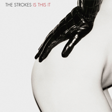
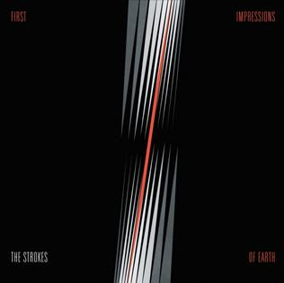
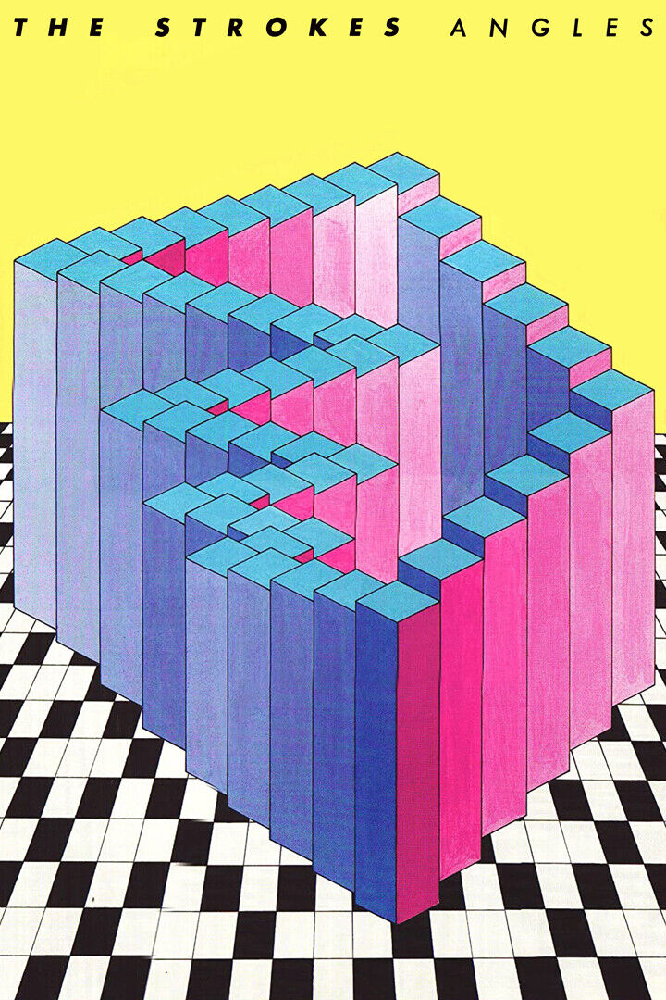
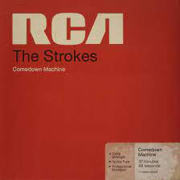

Is This It

- 1. Is This It - 9.5/10
- 2. The Modern Age - 9/10
- 3. Soma - 8/10
- 4. Barely Legal - 8.5/10
- 5. Someday - 9/10
- 6. Alone, Together - 8/10
- 7. Last Nite - 9.5/10
- 8. Hard to Explain - 9/10
- 9. New York City Cops - 8.5/10
- 10. Trying Your Luck - 8/10
- 11. Take It or Leave It - 8.5/10
Room on Fire

- 1. What Ever Happened? - 9/10
- 2. Reptilia - 9.5/10
- 3. Automatic Stop - 8.5/10
- 4. 12:51 - 9/10
- 5. You Talk Way Too Much - 7.5/10
- 6. Between Love & Hate - 8/10
- 7. Meet Me in the Bathroom - 8/10
- 8. Under Control - 9/10
- 9. The Way It Is - 7/10
- 10. The End Has No End - 8/10
- 11. I Can't Win - 7.5/10
First Impressions of Earth

- 1. You Only Live Once - 9/10
- 2. Juicebox - 9.5/10
- 3. Heart in a Cage - 9/10
- 4. Razorblade - 8/10
- 5. On the Other Side - 8.5/10
- 6. Vision of Division - 7.5/10
- 7. Ask Me Anything - 8.5/10
- 8. Electricityscape - 9/10
- 9. Killing Lies - 7/10
- 10. Fear of Sleep - 8/10
- 11. 15 Minutes - 7.5/10
- 12. Ize of the World - 9/10
- 13. Evening Sun - 8/10
- 14. Red Light - 8.5/10
Angles

- 1. Machu Picchu - 9/10
- 2. Under Cover of Darkness - 9.5/10
- 3. Two Kinds of Happiness - 7/10
- 4. You're So Right - 8/10
- 5. Taken for a Fool - 9/10
- 6. Games - 8.5/10
- 7. Call Me Back - 8/10
- 8. Gratisfaction - 7.5/10
- 9. Metabolism - 8.5/10
- 10. Life Is Simple in the Moonlight - 8.5/10
Comedown Machine

- 1. Tap Out - 8.5/10
- 2. All the Time - 9/10
- 3. One Way Trigger - 9/10
- 4. Welcome to Japan - 7.5/10
- 5. 80's Comedown Machine - 8/10
- 6. 50/50 - 8.5/10
- 7. Slow Animals - 8/10
- 8. Partners in Crime - 7/10
- 9. Chances - 7.5/10
- 10. Happy Ending - 8.5/10
- 11. Call It Fate, Call It Karma - 8/10
The New Abnormal

- 1. The Adults Are Talking - 9/10
- 2. Selfless - 8.5/10
- 3. Brooklyn Bridge to Chorus - 9.5/10
- 4. Bad Decisions - 9/10
- 5. Eternal Summer - 8/10
- 6. At the Door - 9/10
- 7. Why Are Sundays So Depressing? - 8/10
- 8. Not the Same Anymore - 8.5/10
- 9. Ode to the Mets - 9.5/10